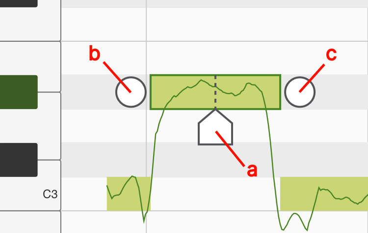

操作指南
音樂黏土是一款強大的音高編輯工具。當使用音樂黏土錄歌時，程序會通過算法分析人聲的音高，並且允許使用者對每一個音符的音高進行修改。音樂粘土在擁有強大功能的同時也擁有簡單的界面和清晰的流程指引，使用者只需要了解了下面兩個程序頁面便可輕鬆使用。
工程頁面
在工程頁面下使用者可以添加音軌、錄製人聲並擺放已經錄好的片段。

1
菜單: 這裡有保存，讀取和導出按鈕。
2
撤消: 使用此按鈕可以撤消對工程文件所做的更改。在較小的屏幕上運行時，長按撤消按鈕會出現恢復按鈕。其它時候，恢復按鈕會出現在撤消按鈕旁邊。
3
指針重置，播放，錄音。
4
對齊網格: 點亮後所拖動的東西會自動對齊網格。
5
設置: 這裡有節拍器、速度、拍子記號和實時監聽的設置。
6
音軌圖標: 點一次會選中此音軌，點兩次可以打開音軌的設置面板。每個音軌的設置面板裡都包含常見的聲道控件，例如靜音/獨奏，音量和聲場定位。同時也可以在這裡改變音軌的顏色。

7
添加音軌: 點這裡可以添加空音軌、伴奏音頻或把人聲音頻文件導入進音樂黏土中分析並修改。 （“導入第三方人聲音頻”的功能需要解鎖專業版本）
8
人聲音頻: 人聲音頻上的微型圖展示了音頻裡所有的音符，雙擊人聲音頻可以進入音高編輯頁面。
9
伴奏音頻: 伴奏音頻會以聲波圖的形式顯示在界面上。
音高編輯頁面
在音高編輯頁面裡你可以對每一個音符的音高進行修改。 （通過雙擊人聲音頻來打開該頁面）

1
有調音符: 方形的輪廓代表音符的大致音高。輪廓裡的線條代表了在每一時刻的精準音高。
2
無調音符: 沒有線條的淺色音符代表無音調的聲音，這些聲音可以是呼吸，混響或環境噪音。
3
主工具: 用來調整音符的音高和音符的起始時間。
4
音符分離工具: 用來切分或合併音符。

4.a
位置標記: 移動它到你需要切割的位置，到位後點擊位置標記（或者上拉）即可把當前音符一分為二。
4.b
合併按鈕（左）: 點擊此處可以讓當前音符和左邊的音符合併。
4.c
合併按鈕（右）: 點擊此處可以讓當前音符和右邊的音符合併。
5
顫音工具（專業版功能）：使用此工具可更改每個音符中的顫音幅度。選擇顫音工具後，你可以在所選音符上向上拖動以放大其顫音或向下拖動以拉平其顫音。

6
連音工具（專業版功能）：選擇了連音工具後，單擊音符將出現一個連音拖扭。使用者可通過拖動此拖鈕來更改音高在兩個音符之間過渡的速度。

6.a
連音托扭: 如需讓兩個音符之間的過渡變慢，將這個手柄向左拖動，如需讓過渡更快，則將手柄向右拖動。
7
聲線工具（專業功能）：此工具可以用來改變人聲的聲線。此處聲線代表的是人聲信號在頻譜上的大致形狀。體型較大的歌手通常會發出低沉的聲音（能量集中在較低頻率的頻譜）。另一方面，身體較小的歌手通常聲音更明亮（能量集中在更高的頻率上）。使用聲線工具，你可以通過重塑人聲在頻譜上的能量分佈來創造新奇的效果。

7.a
聲線塊： 選擇聲線工具後，每個音符上都會出現一個透明的方塊。可通過向上或向下拖動此透明方塊以更改音符的聲線。
Plugin Mode
With the introduction of version 2.0, MusicPutty can now be loaded as an AUv3 plugin within your preferred DAWs. This eliminates the need to transfer audio tracks back and forth between your DAW and MusicPutty while working on a song. Now, you can access MusicPutty's pitch editing tools directly within your DAW's UI.
Load MusicPutty in DAWs
Once you have recorded vocals inside your DAW, you can load MusicPutty by adding it as an insert effect to the vocal track. The following screenshot shows how to do this in Garageband. For instructions on loading insert effects, please consult your DAW's manual.

When adding MusicPutty to an effect chain, it is recommended that you place MusicPutty as close to the beginning of the effect chain as possible. The only effects that should come before MusicPutty are those meant for cleaning the signal, such as a noise gate or other noise reduction plugins. This ensures MusicPutty can capture a clean signal without any audio effects applied, and it leaves the option open for you to add different effects later down the road.
Select Where to Store Plugin's Data
When setting up a new instance of MusicPutty, the plugin prompts you to select a storage location for its data. You have two choices: either embed the data within the host's project file or save it in an external ".mputty" file. The recommended option is to embed the data in the host's project, which simplifies file management when transferring the project to another device. If you select the other option, you will need to copy both the host's project file along with all the ".mputty" files when transferring your work to a different device. Note that this embedding option is supported by most major DAWs, except for Cubasis. If you are using Cubasis, please choose the other option "store in a separate local file".
Capture Audio from DAWs
Before MusicPutty can process your vocals, it needs to capture them from the DAW. Begin by clicking the 'CAPTURE' button to activate MusicPutty's audio capture mode. Then, place the host's playhead at the start of the vocal clip you want to capture and press the host's play button. MusicPutty will start capturing the audio as it flows through the track's effect chain. Press the 'STOP' button once you have captured everything.
Click on the "CAPTURE" button to put the plugin into audio capture mode.

Move the host's playhead to the start of the vocal clip you would like to capture and hit play. Click "STOP" once you are done.
After the audio has been captured, MusicPutty will start to analyze its pitch content. Once that is done, you can start editing your vocals.
DAW Compatibility Tips
Audio plugins on iOS communicate with their hosts through a protocol known as Audio Unit v3 (AUv3). In practice, AUv3 is a loosely defined standard, and each host interacts with its plugins in slightly different ways. Here are a few things you need to be aware of when running MusicPutty under different hosts
Garageband & Logic Pro
Both Garageband and Logic Pro impose restrictions on when an effect plugin is allowed to output audio. If the DAW does not see any audio clip on one of its tracks, the DAW will stop querying audio from all the plugins inserted on that track. That means when moving or importing clips in MusicPutty, you must make sure the same clips are also moved or imported on the host's timeline. Otherwise, the DAW may think there is nothing to render and stop querying audio from MusicPutty.
Cubasis
On Cubasis, you must select the option 'In a separate local file' when the plugin asks where you would like to store its data. Cubasis can't handle plugins with save file larger than a few megabytes. This limitation is a result of how Cubasis implements its undo system. Every time you open and close a plugin's UI in Cubasis, the DAW saves a copy of the plugin's state onto its undo stack. While this approach worked in the early days when most plugins were basic effects with a few parameters, it doesn't work well for today's complex plugins like MusicPutty. We have communicated this issue to the Cubasis team and will continue to work with them, hopefully have this problem addressed in the future.
Auria & Auria Pro
There is currently a bug in Auria where the DAW does not supply its audio effects with transport information during mixdown and channel freeze. To work around this problem, first, export your MusicPutty project as audio files using the plugin's built-in export feature and place the exported audio files onto your vocal tracks inside Auria. Then, bypass all MusicPutty instances before starting mixdown in Auria. We have communicated this issue to the Auria team and will continue to work with them, hopefully have this problem addressed in the future.
N-Track Studio
N-Track Studio sometimes supplies inaccurate transport information to its plugins. When capturing audio in N-Track Studio, please make sure you set 'Audio Capture Mode' to 'Compatibility Mode'. Otherwise, MusicPutty would interpret those inaccurate transport signals as a jump in the host's playhead and stop an ongoing audio capture prematurely.